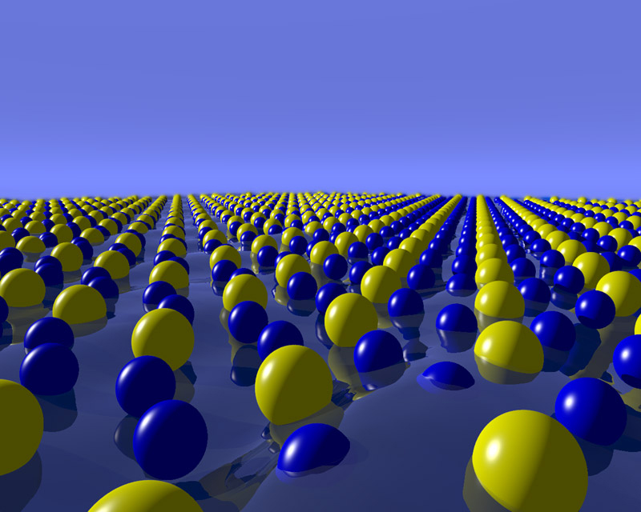

This is an open-source project to develop python software modules for diffraction and the study of the atomic structure of materials. It is the home of the Diffpy-CMI Complex Modeling framework, a modular software framework for robust and extensible modeling of diffraction data. We welcome contributions to this project from the community.
The project is currently centered at Brookhaven National Laboratory, a US Department of Energy, Office of Basic Energy Sciences funded laboratory. Many parts of the code were developed under the diffraction part of the DANSE project, a software construction project funded by the National Science Foundation to provide data analysis software tools for neutron scattering experiments. This project was previously centered at Columbia University and, before that, Michigan State University.
Developers
The active DiffPy development team is Pavol Juhás, Kevin Knox, Xiaohao Yang, Michael McKerns, and Simon J. L. Billinge. Former members of the project are Chris Farrow, Emil Božin, Wenduo Zhou, Peng Tian, Timur Davis, Jiwu Liu, and Dmitriy Bryndin.
The project is currently centered at Brookhaven National Laboratory. It began at the Department of Physics and Astronomy at Michigan State University and, from there, moved to the the Department of Applied Physics and Applied Mathematics at Columbia University in the city of New York before relocating to Brookhaven National Laboratory.
Funding
The DiffPy project is currently supported by Laboratory Directed Research and Development (LDRD) Program 12-007 (Complex Modeling) at Brookhaven National Laboratory. Previous funding was provided by the Distributed Data Analysis of Neutron Scattering Experiments (DANSE) project funded by the US National Science Foundation under grant DMR-0520547. More information on DANSE can be found at http://danse.us. The early developments of PDFfit2 were funded by NSF grant DMR-0304391 in the Billinge-group, and with support from Michigan State University. Any opinions, findings, and conclusions or recommendations expressed in this material are those of the author(s) and do not necessarily reflect the views of the respective funding bodies.